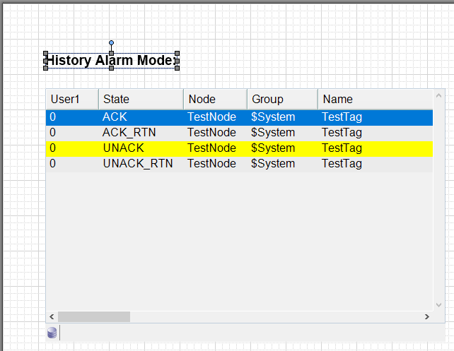
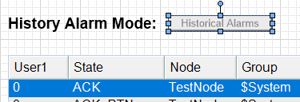
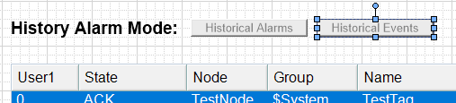
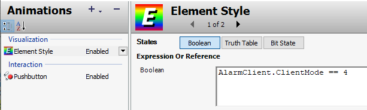
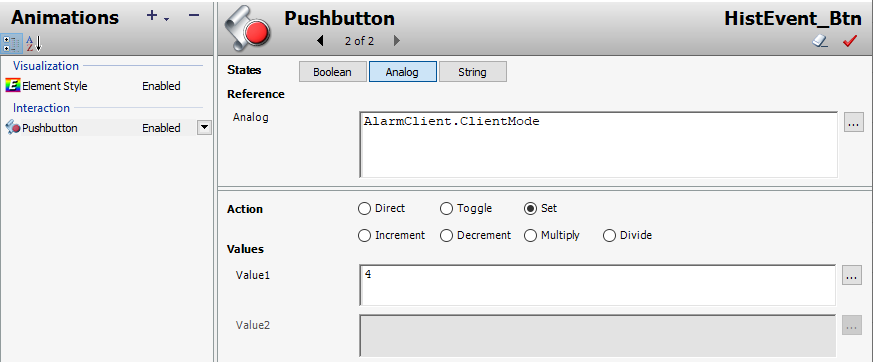
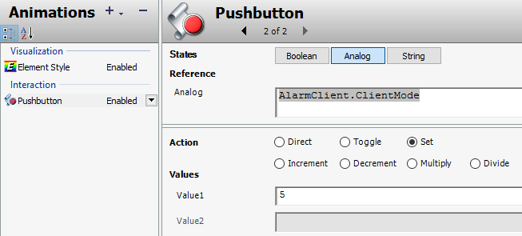
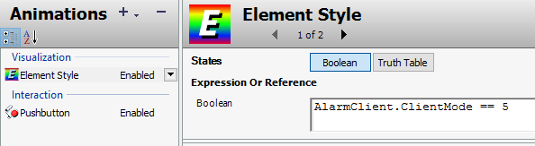
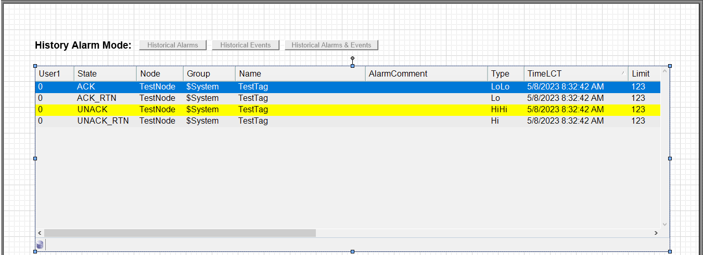
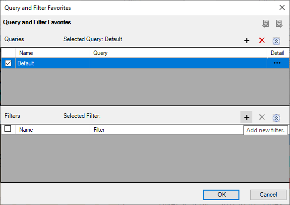
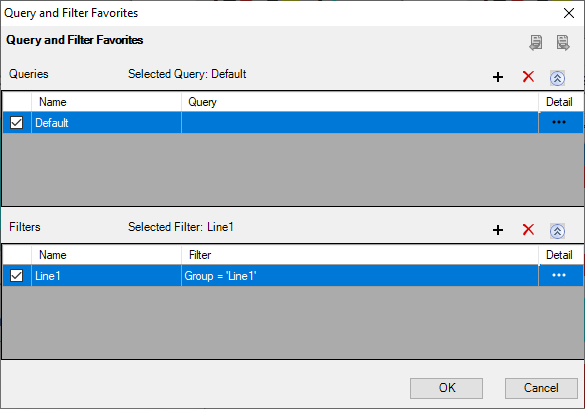

Configure Historical Alarm Mode (5-77)
Module 5 — Alarms and Events Visualization | Pages 369–380





















Do Not Copy Lab 16 – Building a Historical Alarm Display 5-77 AVEVA™ InTouch for System Platform 2023 5. In Alarm Mode, in the Client Mode drop-down list, select Historical Alarms. 6. In Database Connectivity, verify the Authentication Mode is Windows Integrated, and then in the Server Name field, enter your Historian server name. Note: Your instructor will provide the Historian server name. 7. In the Database Name drop-down list, select History Blocks. A Configuration Warning appears, confirming if you want to change the configuration. Note: This warning informs you that the current configuration, including password, will be deleted if you proceed. For the purposes of this lab, no previous configuration exists. However, in the real world, you may have already been connecting to a Microsoft SQL database and you would lose that configuration if you proceeded with using History Blocks. Ensure you have your authentication information recorded before proceeding. 8. In Configuration Warning, click Yes to continue.
Do Not Copy 5-78 Module 5 – Alarms and Events Visualization AVEVA™ Training 9. Click Test Connection. An Info message appears, indicating that the connection was successful. 10. Click OK to close the message. 11. In Time Range, from the time interval list, click the drop-down arrow and select 15 minutes. 12. Click OK to close Edit Animations.
Do Not Copy Lab 16 – Building a Historical Alarm Display 5-79 AVEVA™ InTouch for System Platform 2023 You will now create and configure the buttons you will use to retrieve historical data in runtime. 13. On the canvas, add a Text element at the top-left, above AlarmClient, and then enter History Alarm Mode:. 14. Configure the properties as follows: 15. To the right of AlarmMode_Txt, add a button and configure it as follows: 16. Resize the button to fit the text. Name: AlarmMode_Txt ElementStyle: Title Name: HistAlarm_Btn ElementStyle: Intensity2 Text: Historical Alarms
Do Not Copy 5-80 Module 5 – Alarms and Events Visualization AVEVA™ Training 17. Double-click HistAlarm_Btn and add animations as follows: Pushbutton Element Style 18. Click OK to close Edit Animations. States: Analog Reference: AlarmClient.ClientMode Action: Set Value1: 3 States: Boolean Expression Or Reference: AlarmClient.ClientMode == 3 True, 1, On: Element Style: checked (default) Intensity4 selected False, 0, Off: Element Style: unchecked
Do Not Copy Lab 16 – Building a Historical Alarm Display 5-81 AVEVA™ InTouch for System Platform 2023 19. Duplicate HistAlarm_Btn and configure the duplicate as follows: 20. Place the duplicate to the right of HistAlarm_Btn. 21. Resize the button to fit the text, if necessary. 22. Double-click HistEvent_Btn and modify the animations as follows: Element Style Pushbutton 23. Click OK to close Edit Animations. Name: HistEvent_Btn Text: Historical Events Expression Or Reference: AlarmClient.ClientMode == 4 Value1: 4
Do Not Copy 5-82 Module 5 – Alarms and Events Visualization AVEVA™ Training 24. Duplicate HistEvent_Btn. 25. Configure the duplicate as follows: 26. Resize the button to fit the text. 27. Double-click HistAE_Btn and modify the animations as follows: Pushbutton Element Style 28. Click OK to close Edit Animations. Name: HistAE_Btn Text: Historical Alarms & Events Value1: 5 Expression Or Reference: AlarmClient.ClientMode == 5
Do Not Copy Lab 16 – Building a Historical Alarm Display 5-83 AVEVA™ InTouch for System Platform 2023 29. On the canvas, select the text and buttons, and then from the alignment toolbar, click Align Middle and Make Horizontal Spacing Equal. The text and buttons should appear as follows: 30. On the canvas, expand AlarmClient to the right. 31. Save and close and check in the graphic. Add a Navigation Button for the Historical Alarm Display Now, you will add a Historical Alarms button to the navigation graphic. Clicking the button at runtime will open the AlarmHistDisplay symbol in a popup window. 32. On the Graphics tab, open the SystemNavigation symbol for editing. 33. On the canvas, duplicate Alarm Overview and place the duplicate to the right of the original. 34. Use Substitute Strings to change the duplicate button text to Historical Alarms.
Do Not Copy 5-84 Module 5 – Alarms and Events Visualization AVEVA™ Training 35. Configure the custom properties for the Historical Alarms button as follows: 36. Click OK to close Edit Custom Properties. 37. Save and close and check in the graphic. Test in Runtime Finally, you will view historical alarms and events and create a filter in runtime. 38. In WindowMaker, click Runtime. 39. In the Navigation window, click the Historical Alarms button. After a moment, the AlarmHistDisplay window opens with the Historical Alarms button highlighted to show the client mode, and historical alarms are retrieved and appear in the Alarm Client. Note: If necessary, you can resize the window. GraphicName: AlarmHistDisplay WindowModal: false
Do Not Copy Lab 16 – Building a Historical Alarm Display 5-85 AVEVA™ InTouch for System Platform 2023 40. In the AlarmHistDisplay popup window, right-click in the Alarm Client and select Queries and Filters. The Query and Filter Favorites window appears. 41. In Filters, click Add new filter. The Add Query or Filter window appears.
Do Not Copy 5-86 Module 5 – Alarms and Events Visualization AVEVA™ Training 42. In Query or Filter Name, enter Line1. 43. Construct a filter, where Group = 'Line1'. 44. Click OK, and then in Filters, check the Line1 filter. The filter is enabled.
Do Not Copy Lab 16 – Building a Historical Alarm Display 5-87 AVEVA™ InTouch for System Platform 2023 45. Click OK, and then verify the historical alarm information is for Line1 only. 46. Close AlarmHistDisplay. Now, you will generate some events and view them. 47. In the ContentDisplay window, for the agitator, change the speed setpoint, and then start and stop the agitator. 48. In the Navigation window, click Historical Alarms. 49. In the AlarmHistDisplay window, click Historical Events. The agitator events you generated appear.
Do Not Copy 5-88 Module 5 – Alarms and Events Visualization AVEVA™ Training 50. In the AlarmHistDisplay window, click Historical Alarms & Events. The historical display shows a combination of alarms and events. Note: You may need to scroll to the bottom of the list and then click the vertical scroll bar button multiple times to see your events in the Alarm Client. 51. In the AlarmHistDisplay popup window, click Historical Alarms to show only alarms. 52. Close the AlarmHistDisplay popup window. 53. Click Development! to return to WindowMaker.
Review the sections above for the main topics, step-by-step procedures, and important configuration details.
This is part of the InTouch HMI layer, which integrates with Application Server's Galaxy for a complete visualization solution.
Module 5 — Alarms and Events Visualization. AVEVA InTouch for System Platform 2023 Training.
Next: Lesson L30 — Historization + Real-Time Trending